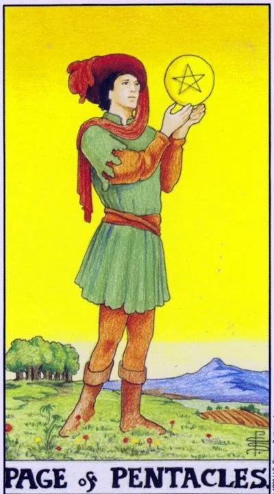

Minor Arcana · Pentacles
XIPage of Pentacles
Young practitioner: first serious goal, thirst for learning, and good news about money, study, or new business.
Archetype and core meaning
The young page stands in a green field, looking at the coin in its raised hand as if it were reading a message in it, behind it is a plowed field: the earth is ready, the experience is not yet, and this combination opens it to any future. The page of the pentacles is the spirit of discipleship in the world of matter: the first goal, the first work, the first serious interest in how the material world works.
The energy started without cynicism: the page doesn't yet know that "it doesn't happen like that," so it tries. Its attentive view of the coin is a model of attitudes to possibilities: to consider up close before grasping. Often a card means a specific message - an invitation to study, a job offer, the beginning of a big road.
Daily life
Everyday life gets a student note: a new course, a fresh budget, the first steps of adulthood — contracts, insurance, shopping planning — and maybe some good practical news: a tax refund, a call about an apartment, a discount you'd like to get.
Work and career
Professional beginnings: internship, first job, probation, new chapter in the profession. Not afraid to look new is the advantage of the page: it learns quickly and asks questions. Favorable for applications for programs, grants and start-ups. Small regular steps: page doesn't run a marathon, it learns to put feet.
Relationships
You know, it's a young, it's a cautious feeling: the sympathy, the test of the case, is to write first, to call for coffee. The card partner is serious beyond age: not loud words, but consistent actions. In a pair of pages, the theme of co-development is learning something together, saving for the first common acquisition.
Health
It's a great time to get to know your body: a health journal, basic diagnostics, first workouts with a coach. Health is built from the bottom up -- sleep, nutrition, simple exercise, and small, right steps have a noticeable effect. Just don't try to embrace anatomy in a week.
Spiritual meaning
Page - Earth in its infancy: a student of the magic of everyday life, whose first altar is a desk, and the first spell is a to-do list. Signs come through the usual: a letter, a bell, a coin found. Drive your first tools — a deck, a notebook, a crystal — carefully and without haste.
Scattered notebooks: plans without discipline, learning without purpose, and the message you least expected.
Archetype and core meaning
The page turned away from the coin, the look wandering in the clouds, the field behind it remained unploughed. The inverted page is a talent that has lost its course: hundreds of courses started, none completed; a grand plan that did not withstand the first week; adult life postponed until times that do not come by themselves.
It's not stupidity, it's immaturity of attention: there's a lot of energy, there's no focus, every new idea saves you from bringing the old one to life. The second story is the bad news in practical matters: a broken deal, a failed exam, a failure that preparation would avoid. Lesson one: the world pays not for ideas, but for what is done.
Daily life
The house is sinking in the wrong places: the renovation is frozen in the "beginning to live in a new way", subscriptions are pulling money, documents are not issued, planning is turned into a genre of entertainment - beautiful diaries without records. Choose one household task and close it today. Small completeness cures slobberness better than new wish lists.
Work and career
The reputation of a promising person who doesn't: deadlines go by, details get lost, exams get stuck with skips, sometimes it's the wrong start, a profession chosen for a beautiful showcase, honest answers to the question "what do I really want" are more useful than another resume.
Relationships
Romance is languishing with infantility: the partner promises and forgets, the relationship is in correspondence, and the meetings are constantly shifting. You can hide in a slight flirtation yourself, so as not to take responsibility for real intimacy. The couple who thought of a common cause abandoned him at the start. The card offers a simple test of maturity of feelings: how many promises have been fulfilled in the last month?
Health
Health is put on hold: symptoms are ignored, prescribed not started, Internet self-diagnoses replace the doctor - dangerous savings. The body forgives a lot, but the credit will run out. Write down one small action on a particular day: analysis, walking, early withdrawal.
Spiritual meaning
The flipped page is the energy of the Earth, crumbled in clods: intentions do not sprout because they are not embedded in the soil. Signs of the world pass by unnoticed, the messenger sleeps. The practice of return: the magic of small commitments to keep your word for the day; keep a sign journal. Tradition warned students: until you learn to complete the simple, the complex will remain theater.
🌿 How the school reads this rank
The main idea
Dependence on body, money, resources and little experience, and you can't afford everything you can imagine.
How it manifests
In work, you have a beginner with little influence on conditions, in relationships, your body and your physical attraction react before you're conscious, in development, you gradually build up your skill and resource.
The shadow side
There's discontent, there's no leverage, and a physical reaction can completely subjugate a person to the situation.
Keywords
resource · body · little experience · dependence · performer
📜 In detail — from the rank lecture
Essence of the card
dependence on matter – body, money, resources; land is experience and skill, which are not yet enough: both “experience is not enough” and “the power for the planned is not enough”.
Upright position
- Work: "gets not as much as he wants, but as much as he pays," there is no right to ask for an increase - the director will raise if he thinks he does; money "for a beginner is normal." The inverted is unhappy with his salary, but there are zero levers; the extreme form is "broker", an employee who does not do so.
- Body and sex: the body reacts: the straight receives the right attraction; the upside down loses control entirely - "like striped elephants at the sounds of a flute" or suffers physically unpleasant: a partner with unbearable spirits (the real case of a listener from a bank) or a husband with whom "sleeping has to be."
- Animals: an obedient dog is the right page; a cat who “does not order it to do it in his own way” is the wrong page.
Negative meaning
Loses control of the whole body, like striped elephants at the sound of a flute.
School emphases and distinctive points
- One scene is laid out in all four suits: the girl whistles after - the habit of not turning around (pentacles), the impulse to snap (wands), the calculation of "trolling" and ignoring a strong person (swords), emotional anticipation (cups); "you turn around - means page".
- He illustrates the hierarchy of the court with one plot: the son does not get on the plane because of the weather - the page sits at the airport and waits, the knight changes the ticket, the queen chooses the transport herself, the king would fly in a private jet.
- The teacher is smeared in the elements: information is swords, the skill is “driven into habit” – earth, socialization (“school is primarily a treasure trove of communication”) – wands, love and humanities – cups; class favorites – queens.
- The medieval gender framework is openly stated: tarot is a “slice of medieval society”, women are traditionally put in the place of the page – the first to not show initiative.
- Customer Reception: always add “but it’s inaccurate – cards work differently for different people, check on yourself first.”
- Modern images: the film "Terminal" - a clean page (stuck at the airport, limited in everything); about Gagarin - "the party said it was necessary, the Komsomol answered to eat" - like an inverted page of pentacles, physically fixed.
- Astrology (Zodiac, planet) and Slavic series at the lecture is not at all; outside the masty bindings only temperaments and comparison with Gemini.
- Pregnancy is played by pages as an extreme dependence on the situation; alcohol and drug addiction are “also pages”, each has a dependence in his element.
- If page drops when contracting, it is pointless to advise “learning”: the page has no choice – to be the perfect performer.
- Take only visually pleasing deck; the course deck is intentionally neutral, and the Manara with naked bodies will cause rejection and will not work.
Keywords
“How much is paid is so much is”; the body is decided; an obedient dog / cat (translation); little experience and strength.